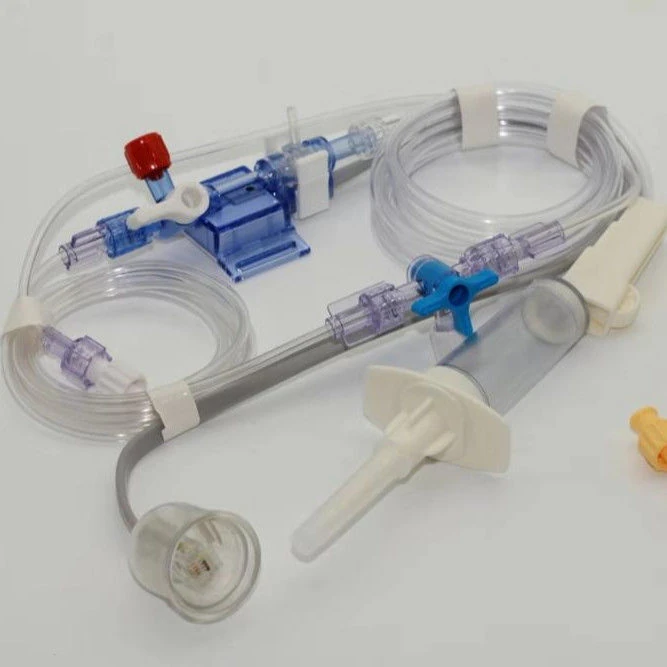
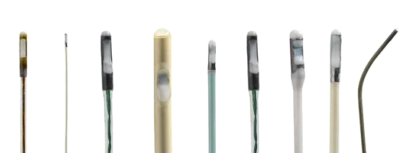
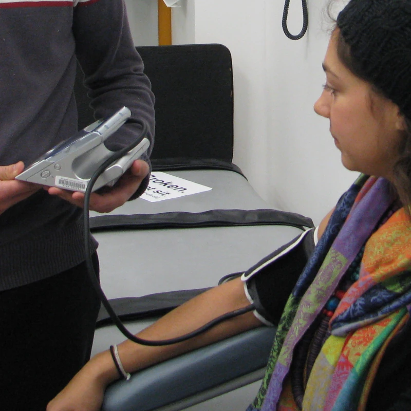
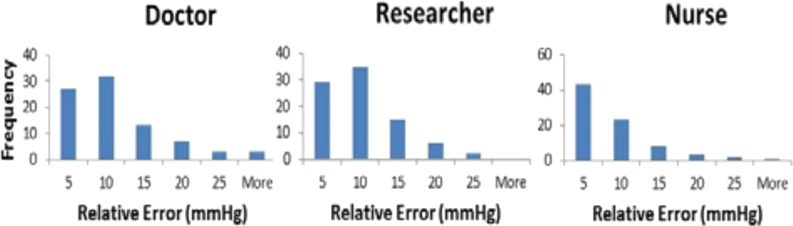
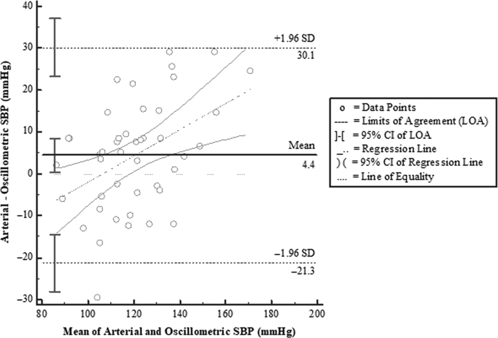
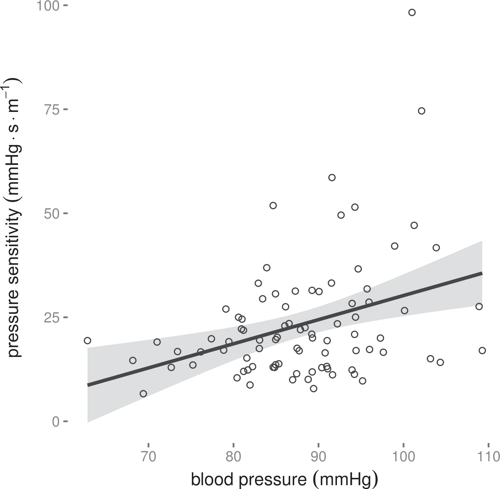
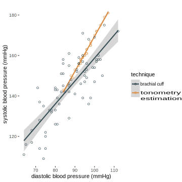
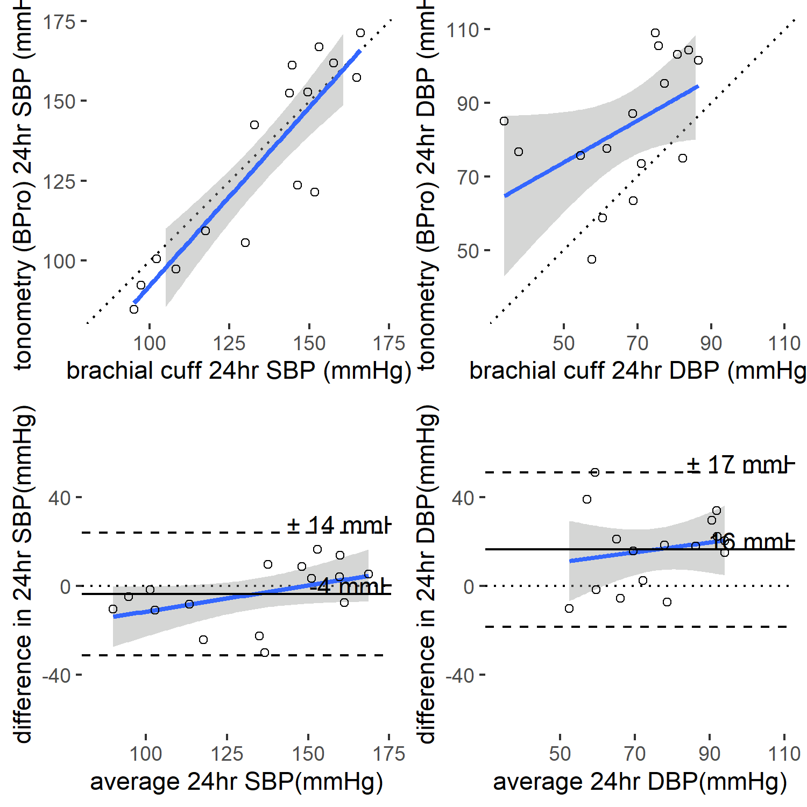

<!-- .slide: data-auto-animate-restart --> # Physiological limits in cuffless blood pressure estimation ##### Mark Butlin <img src="images/logo_MQ_INT_HOR_RGB_POS.png" height="60px" align="right" alt="Macquarie University crest" style="padding-top:30px; padding-bottom:30px"> <p> </p> <p> </p> <p class="citation"> <br>IEEE EMBS 2023<br>Session: Recent Advances in Cuffless Blood Pressure Measurement<br>25th July 2023</p> -- # Physiological limits in cuffless blood pressure estimation ##### Mark Butlin <img src="images/logo_MQ_INT_HOR_RGB_POS.png" height="60px" align="right" alt="Macquarie University crest" style="padding-top:30px; padding-bottom:30px"> <br> <br> <br> <br> <h5>Disclosures</h5> <div class="container"> <div class="col"> <p>CardieX AtCor Medical</p> <ul> <li>funding research assistant in group.</li> <li>past contract research.</li> </ul> </div> <div class="col"> <p>Past collaborative efforts (unfunded) with:</p> <ul> <li>Blumio</li> <li>Fledge Innovation Laboratories</li> </ul> </div> </div> -- ### We rarely <b>measure</b> blood pressure ####   <p class="citation"><a href="https://www.medicaldevicecables.com">www.medicaldevicecables.com</a><br><a href="https://www.adinstruments.com">www.adinstruments.com</a></p> -- ### We never <b>measure</b> blood pressure #### <img src="images/BP_Medical Times72_11_1944_Hales_flipped.jpg" width="300px"> <p class="citation">Modified from <a href="https://archive.org/details/sim_medical-times_1944-11_72_11/page/314/mode/2up">Cultural Medicine. Stephen Hales - Father of Hemodynamics</a>. Medical Times. 1944;72(11):315-321.</p> -- ### Most common blood pressure <b>estimation</b> method #### Oscillometric  <img src="images/BP_Avolio2014Fig2_5.png" width="79%"> <p class="citation">Avolio AP, Butlin M, Winter D. Cardiology: Blood pressure. In: The Physiological Measurement Handbook. CRC Press; 2014:13-41. doi:<a href="https:/doi.org/10.1201/b17831">10.1201/b17831</a></p> -- ### Most common blood pressure <b>estimation</b> method #### Reference value (auscultation) is also an estimation  <p class="citation">Celler BG, Basilakis J, Goozee K, Ambikairajah E. Non-Invasive measurement of blood pressure - Why we should look at BP traces rather than listen to Korotkoff sounds. In: 2015 37th Annual International Conference of the IEEE Engineering in Medicine and Biology Society (EMBC). IEEE; 2015:5964-5967. doi:<a href="https://doi.org/10.1109/EMBC.2015.7319750">10.1109/EMBC.2015.7319750</a></p> -- ### Cuff based blood pressure is an estimation #### And not a great one at that  <p class="citation">Rebesco MR, Pinkston MC, Smyrnios NA, Weisberg SN. A Comparison of Non-Invasive Blood Pressure Measurement Strategies with Intra-Arterial Measurement. Prehosp Disaster Med. 2020 Oct;35(5):516-523. doi: <a href="https://doi.org/10.1017/S1049023X20000916">10.1017/S1049023X20000916</a></p> -- ### Blood pressure estimation is still powerful as a diagnostic tool #### Even with poor accuracy J.W. Fisher, 1912: <blockquote> “The <b style="color:#c6007e">sphygmomanometer is indispensable</b> in life insurance examinations, and the time is not far distant when all progressive life insurance companies will require its use in all examinations of applicants for life insurance.” </blockquote> <p class="citation">Fisher JW. The diagnostic value of the sphygmomanometer in examinations for life insurance. JAMA. 1914; LXIII(20):1752. doi:<a href="https://doi.org/10.1001/jama.1914.02570200046013">10.1001/jama.1914.02570200046013</a></p> -- ### Blood pressure estimation #### Reference value is usually also a blood pressure estimation <table style="font-size:large;"> <tr> <th>blood pressure estimation</th> <th>reference</th> </tr> <tr> <td>auscultation</td> <td>comparison to a second person using auscultation</td> </tr> <tr> <td>oscillometric</td> <td>auscultation</td> </tr> <tr> <td>cuffless approaches</td> <td>auscultation or oscillometric</td> </tr> </table> <br> <center> <img src="images/Butlin2021_Figure1.jpg" width="75%" align="center"> </center> <p class="citation">Butlin M, Tan I, Cox J, et al. Blood pressure measurement methodologies: present status and future prospects. Ram CVS, ed. Hypertension Journal. 2020;6(3):109-116. doi:<a href="10.15713/ins.johtn.0196">10.15713/ins.johtn.0196</a></p> -- ### Blood pressure estimation #### Correlation with acutely measured (invasive) blood pressure <table style="font-size: large;"> <tr> <th>method</th> <th></th> <th>strength of correlation with invasive blood pressure</th> </tr> <tr> <td>auscultation</td> <td></td> <td>fair (clinically useful)</td> </tr> <tr> <td>oscillometric</td> <td></td> <td>fair (clinically useful)</td> </tr> <tr> <td>cuffless approaches</td> <td>pulse wave velocity</td> <td>worse than auscultation / oscillometric</td> </tr> <tr> <td></td> <td>waveform features</td> <td>similar to, or worse than pulse wave velocity?</td> </tr> <tr> <td></td> <td>multi-regressional / machine learning models</td> <td>For acute blood pressure changes, likely no better than above.<br>May offer advantages in resting blood pressure prediction.</td> </tr> </table> <br> <center> <img src="images/Butlin2021_Figure1.jpg" width="40%" align="center"> </center> <p class="citation">Butlin M, Tan I, Cox J, et al. Blood pressure measurement methodologies: present status and future prospects. Ram CVS, ed. Hypertension Journal. 2020;6(3):109-116. doi:<a href="10.15713/ins.johtn.0196">10.15713/ins.johtn.0196</a></p> -- ### Challenges in cuffless blood pressure estimation #### You're all individuals! ... (I'm not)<sup>1</sup>  <p class="citation"><sup>1</sup>Monty Python, Life of Brian.<br> Butlin M, Shirbani F, Barin E, Tan I, Spronck B, Avolio AP. Cuffless estimation of blood pressure: importance of variability in blood pressure dependence of arterial stiffness across individuals and measurement sites. IEEE Transactions on Biomedical Engineering. 2018;65(11):2377-2383. doi:<a href="https://doi.org/10.1109/tbme.2018.2823333">10.1109/tbme.2018.2823333</a></p> -- ### Challenges in cuffless blood pressure estimation #### (In)sensitivity of predictor variables $$ \Delta BP_{1} = \Delta BP_{2} $$ $$ \Delta PWV_{1} \ggg \Delta PWV_{2} $$ -- ### Estimation of systolic and diastolic blood pressure #### Requires multiple (at least two) independent predictors  R<sup>2</sup>=0.99<br> Correlation between estimated systolic and diastolic blood pressure with the BPro cuffless blood pressure device. <p class="citation">M. Butlin, J.R. Cox, A. Avolio, I. Tan, Evaluation of BPro cuffless blood pressure device, Unpublished.</p> -- ### Cuffless blood pressure accuracy #### Variability vs accuracy for mean of population  <p class="citation">M. Butlin, J.R. Cox, A. Avolio, I. Tan, Evaluation of BPro cuffless blood pressure device, Unpublished.</p> -- <!-- .slide: data-background="#373A36" --> <p style="color:white;font-size:1.5em">If cuffless blood pressure estimation is likely to have poor accuracy, does it have utility?</p> -- ### Possible uses of cuffless blood pressure estimation #### Accounting for lower accuracy <div class="container"> <div class="col"> Use principles of regression to the mean: <ul> <li>weekly or monthly resting blood pressure from multiple daily measures</li> </ul> </div> <div class="col"> <span class="fragment"> Use for detection of <b>large</b> blood pressure changes without magnitude: <ul> <li>absence / presence of nocturnal dipping<br> </li> <li>acute <strong>large</strong> changes in blood pressure<br>(warning system)<br> </li> </ul> </span> </div> </div> -- # Physiological limits in cuffless blood pressure estimation ##### Mark Butlin <img src="images/logo_MQ_INT_HOR_RGB_POS.png" height="60px" align="right" alt="Macquarie University crest" style="padding-top:30px; padding-bottom:30px"> <p> </p> <p> </p> <p class="citation"> <br>IEEE EMBS 2023<br>Session: Recent Advances in Cuffless Blood Pressure Measurement<br>25th July 2023</p>